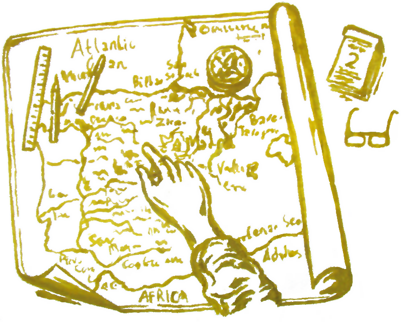
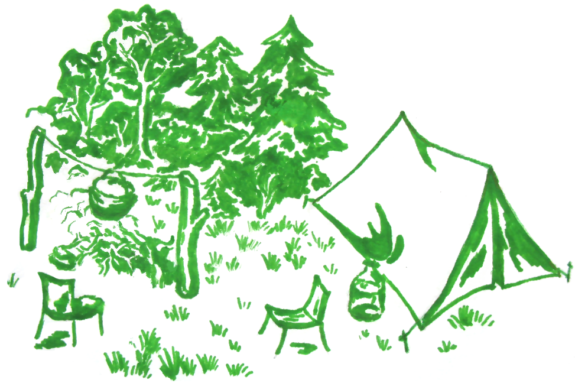

How to plan a trip?
-
Get started!

If you are going to walk for several hours (by bike or on foot), do not plan routes that are well known to you! If you are planning a trip for a day, several days or more, make it interesting and memorable... Discover the world, make discoveries, go to meet challenges. Use all the opportunities, because life is not as long as it seems!
-
Evaluation

Find out peculiarities of your trip, or walks. The longer and more complex the journey, the more responsibility you take for yourself. Time of year, weather, environment, climate, relief, various risks — those factors that can contribute to a beautiful and unforgettable journey, or vice versa, make it look like a trip in style "Man vs. Wild". Take into account all the difficulties and challenges that may happen on the road. Make a list of things to take with you. Weather conditions may change.
If you are planning a trip (trip) in a team or with a friend, find out his (their) needs, interest, propensity to certain factors and endurance of each of you. The total length of the route depends on your group and the ability of each of you. When the situation allows — take the opportunity to speak! It is a good idea to first find the history of the place you are going to, the events that took place there, or any other information about it to tell others. Go to the menu item "Learn about places".
A big trip in mountainous terrain, in wild nature or unfavorable weather conditions, or mountain biking is something that requires some physical training, endurance, and some kind of experience. In this case, think about insurance, that you can buy in Medical insurance policy. If you are the organizer of this journey, treat this with your soul and take care of your group. I would recommend visiting some useful websites in this case: How to Plan a Wild Camping Trip and Enjoy Nature for Free;
How to budget for a big trip;
Tactical tourism (PDF).Make a stop on the photo, do breaks for snacks and rests. Make rest more often, especially if your group includes women. Connoisseur camps recommend drinking some water every 30 minutes. Do not forget that the daily human need for water in hot weather — up to 2.5 liters, which is almost 2.5 times more than in the normal period. If the season is not summer, the air temperature is below 20 °C, take with you hot drinks and, if possible, a thermos. Do not neglect the diet that you need in a way. A container with raisin and thermos with tea will not take up much space in your bag, but this may not be enough for the body's need. The time taken will be vivid and will give you new strength and desires if you will strive to achieve harmony in every field of needs. More advises about food in the trip you can get there:
30 Healthy Foods That Are Perfect for a Road Trip;
44 Healthy Road Trip Snack Ideas. -
Determining the route

Determine the route first, if you are new to the road. There are good mobile apps that will make your route on the map, measure the distance and time of the trip. If you do not have this app on your mobile device, you can install it. If you are not able to use the application, it is advisable to have at least a paper card. In this case, look ahead to the map, draw the route with a simple pencil, or set the start and end points and the points of your stops. For big trips it is also useful to have a compass, a lighter or matches, a PowerBank with USB for charging a mobile, a lantern. Remember that a big trip in nature environment can take more than one day.
Do not forget that the real distance can be much longer than that shown on the map. The average speed of a person is 5 km/h (or 3.1 mph), cyclists' speed — 10 ÷ 30 km / h. (6.2 ÷ 18.6 mph).
Use the rule "To ride there, where it's well to ride, and to run where it's well to run". You shouldn't choose a long and sweet route. Often, even for a bicycle ride, it's better to find a shorter route that does not run out of the way, but will leave pleasant and interesting memories and bring pleasure. If the mobile scheduler propose too long route, you can try to put points on map again or in a different way. Typically, mobile planners can show multiple paths in different colors to help users to choose the best one. There are applications that use so-called "route constructor". They use the activity of other anonymous users and offer the most used routes.
If you have installed a mobile scheduler, use its various features: adding your own routes, choosing a transport, changing the interface, etc. If you notice any bugs or disadvantages, use feedback to inform developers about cons of app.
-
"3 steps ahead thinking"

Notice the rule "Make haste slowly" :) Schedule a trip in advance. My advise is to start planning a big trip for a 2 weeks or a month before leaving home. Discuss a trip with friends or family. Prepare a first aid kit. It can sometimes be very necessary. Think about best way to pick up things you need. Separate this task into parts, do not hesitate for all reasonably! A common mistake is to turn off a half-discharged phone or to change the mode into flight. Charge your phone battery in advance, before going out. If you have problems with this, contact with your family (friends) from time to time.
If you plan to march with your friends, divide the burden for each. A woman usually has fewer things to bring in a road, or nothing, depending on her physical condition. If the trip takes more than one day, and you plan to spend a night out at the local, please contact them in advance. In this case, find out the number of people who can take the owner, housing conditions and cost of living, their location. Prepayment for housing may be required. Ask for reviews about accommodation.
-
Failed at first?..
It's hardly possible for someone to plan a lucky ride the first time. If you have little experience, then a good advice will be to plan a simple trip that does not take much time and will not take much effort. If there are certain risks or complications that you have not encountered — think about how to eliminate them. Bring to the notice these things to your family or friends, pick up your phone to be in touch. Do not invite many friends to the journey without having the experience to cope with their tasks and problems independently. Get experience, knowledge and practice with every next step — and you'll get confidence! Do not invite many friends to the trip without having your own experience to cope with tasks and problems independently.
Get experience, knowledge and practice with every next step — and you'll boost your confidence!
-
Do not be afraid to plan big and far trips!
If you have free time, experience, equipment, financed and opportunities — do not be afraid to make big steps! If you have long been familiar with your native town, open the world further. Discover your homeland and cultural heritage by traveling in your native country. Traveling abroad or far away from home is a great opportunity to get to know the world wider, do not make any discoveries and even change lives. St. Augustine said once: "The world is a book and those who do not travel read only one page."